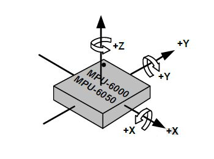

Nota
Ciao, benvenuto nella Community su Facebook per gli appassionati di SunFounder Raspberry Pi, Arduino e ESP32! Approfondisci il tuo utilizzo di Raspberry Pi, Arduino ed ESP32 insieme ad altri appassionati.
Perché unirti a noi?
Supporto esperto: Risolvi i problemi post-vendita e le sfide tecniche con l’aiuto della nostra community e del team.
Impara e Condividi: Scambia consigli e tutorial per migliorare le tue competenze.
Anteprime Esclusive: Ottieni l’accesso anticipato a nuovi annunci di prodotti e anticipazioni.
Sconti Speciali: Approfitta di sconti esclusivi sui nostri prodotti più recenti.
Promozioni e Giveaway Festivi: Partecipa a promozioni e concorsi in occasione delle festività.
👉 Pronto a esplorare e creare con noi? Clicca su [Qui] e unisciti oggi stesso!
2.2.6 Modulo MPU6050
Introduzione
L’MPU-6050 è il primo e unico dispositivo di tracciamento del movimento a 6 assi (giroscopio a 3 assi e accelerometro a 3 assi) progettato per smartphone, tablet e sensori indossabili, caratterizzato da basso consumo energetico, costo contenuto e alte prestazioni.
In questo esperimento, useremo il protocollo I2C per ottenere i valori del sensore di accelerazione a tre assi e del giroscopio a tre assi per l’MPU6050 e li visualizzeremo a schermo.
Componenti

Principio di Funzionamento
MPU6050
L’MPU-6050 è un dispositivo di tracciamento del movimento a 6 assi (combina un giroscopio a 3 assi e un accelerometro a 3 assi).
I suoi tre sistemi di coordinate sono definiti come segue:
Posiziona l’MPU6050 piatto sul tavolo, assicurandoti che la faccia con l’etichetta sia rivolta verso l’alto e che un punto su questa superficie sia nell’angolo in alto a sinistra. In questa posizione, la direzione verticale rivolta verso l’alto corrisponde all’asse Z del chip. La direzione da sinistra a destra è considerata l’asse X. Di conseguenza, la direzione da dietro a davanti è definita come l’asse Y.
Accelerometro a 3 assi
L’accelerometro si basa sul principio dell’effetto piezoelettrico, ossia la capacità di alcuni materiali di generare una carica elettrica in risposta a sollecitazioni meccaniche applicate.
Immagina una scatola cuboidale con all’interno una piccola sfera, come nell’immagine sopra. Le pareti di questa scatola sono realizzate con cristalli piezoelettrici. Ogni volta che inclini la scatola, la sfera è costretta a muoversi nella direzione dell’inclinazione a causa della gravità. La parete con cui la sfera entra in contatto genera piccole correnti piezoelettriche. In totale, ci sono tre coppie di pareti opposte in un cuboide. Ogni coppia corrisponde a un asse nello spazio tridimensionale: assi X, Y e Z. In base alla corrente prodotta dalle pareti piezoelettriche, è possibile determinare la direzione e l’intensità dell’inclinazione.

Possiamo utilizzare l’MPU6050 per rilevare l’accelerazione su ciascun asse di coordinate (in uno stato fermo sul tavolo, l’accelerazione dell’asse Z è pari a 1 unità di gravità, mentre gli assi X e Y sono pari a 0). Se è inclinato o in condizioni di assenza di peso/sovrappeso, la lettura corrispondente cambierà.
Esistono quattro intervalli di misura che possono essere selezionati tramite programmazione: +/-2g, +/-4g, +/-8g e +/-16g (predefinito: 2g), ciascuno corrispondente a una diversa precisione. I valori variano da -32768 a 32767.
La lettura dell’accelerometro viene convertita in un valore di accelerazione mappando la lettura dall’intervallo di lettura all’intervallo di misura.
Accelerazione = (Dati grezzi asse Accelerometro / 65536 * Intervallo di accelerazione a piena scala) g
Prendiamo come esempio l’asse X: quando i dati grezzi dell’asse X dell’accelerometro sono 16384 e l’intervallo selezionato è +/-2g:
Accelerazione lungo l’asse X = (16384 / 65536 * 4) g =1g
Giroscopio a 3 assi
I giroscopi funzionano sul principio dell’accelerazione di Coriolis. Immagina una struttura a forma di forcella che si muove costantemente avanti e indietro. È tenuta in posizione usando cristalli piezoelettrici. Ogni volta che si cerca di inclinare questa disposizione, i cristalli sperimentano una forza nella direzione dell’inclinazione, dovuta all’inerzia della forcella in movimento. I cristalli producono quindi una corrente in accordo con l’effetto piezoelettrico, e questa corrente viene amplificata.

Anche il giroscopio offre quattro intervalli di misura: +/- 250, +/- 500, +/- 1000, +/- 2000. Il metodo di calcolo è sostanzialmente simile a quello dell’accelerometro.
La formula per convertire la lettura in velocità angolare è la seguente:
Velocità angolare = (Dati grezzi asse Giroscopio / 65536 * Intervallo di velocità angolare a piena scala) °/s
Prendiamo come esempio l’asse X: quando i dati grezzi dell’asse X del giroscopio sono 16384 e l’intervallo è +/-250°/s:
Velocità angolare lungo l’asse X = (16384 / 65536 * 500)°/s =125°/s
Schema di Collegamento
L’MPU6050 comunica con il microcontrollore attraverso l’interfaccia del bus I2C. I pin SDA1 e SCL1 devono essere collegati ai rispettivi pin.

Procedure Sperimentali
Passo 1: Costruisci il circuito.

Passo 2: Configura I2C (vedi Configurazione I2C. Se I2C è già configurato, salta questo passo.)
Passo 3: Accedi alla cartella del codice.
cd ~/davinci-kit-for-raspberry-pi/c/2.2.6/
Passo 4: Compila il codice.
gcc 2.2.6_mpu6050.c -lwiringPi -lm
Passo 5: Esegui il file eseguibile.
sudo ./a.out
Quando il codice è in esecuzione, gli angoli di deflessione sugli assi X e Y e l’accelerazione, insieme alla velocità angolare su ciascun asse letta dall’MPU6050, saranno calcolati e visualizzati sullo schermo.
Nota
Se non funziona dopo l’esecuzione o compare un messaggio di errore: "wiringPi.h: No such file or directory", consulta Il codice C non funziona?.
Codice
#include <wiringPiI2C.h>
#include <wiringPi.h>
#include <stdio.h>
#include <math.h>
int fd;
int acclX, acclY, acclZ;
int gyroX, gyroY, gyroZ;
double acclX_scaled, acclY_scaled, acclZ_scaled;
double gyroX_scaled, gyroY_scaled, gyroZ_scaled;
int read_word_2c(int addr)
{
int val;
val = wiringPiI2CReadReg8(fd, addr);
val = val << 8;
val += wiringPiI2CReadReg8(fd, addr+1);
if (val >= 0x8000)
val = -(65536 - val);
return val;
}
double dist(double a, double b)
{
return sqrt((a*a) + (b*b));
}
double get_y_rotation(double x, double y, double z)
{
double radians;
radians = atan2(x, dist(y, z));
return -(radians * (180.0 / M_PI));
}
double get_x_rotation(double x, double y, double z)
{
double radians;
radians = atan2(y, dist(x, z));
return (radians * (180.0 / M_PI));
}
int main()
{
fd = wiringPiI2CSetup (0x68);
wiringPiI2CWriteReg8 (fd,0x6B,0x00);//disabilita modalità sleep
printf("set 0x6B=%X\n",wiringPiI2CReadReg8 (fd,0x6B));
while(1) {
gyroX = read_word_2c(0x43);
gyroY = read_word_2c(0x45);
gyroZ = read_word_2c(0x47);
gyroX_scaled = gyroX / 131.0;
gyroY_scaled = gyroY / 131.0;
gyroZ_scaled = gyroZ / 131.0;
// Stampa i valori degli assi X, Y e Z del sensore giroscopico.
printf("My gyroX_scaled: %f\n", gyroY X_scaled);
delay(100);
printf("My gyroY_scaled: %f\n", gyroY Y_scaled);
delay(100);
printf("My gyroZ_scaled: %f\n", gyroY Z_scaled);
delay(100);
acclX = read_word_2c(0x3B);
acclY = read_word_2c(0x3D);
acclZ = read_word_2c(0x3F);
acclX_scaled = acclX / 16384.0;
acclY_scaled = acclY / 16384.0;
acclZ_scaled = acclZ / 16384.0;
// Stampa i valori degli assi X, Y e Z del sensore di accelerazione.
printf("My acclX_scaled: %f\n", acclX_scaled);
delay(100);
printf("My acclY_scaled: %f\n", acclY_scaled);
delay(100);
printf("My acclZ_scaled: %f\n", acclZ_scaled);
delay(100);
printf("My X rotation: %f\n", get_x_rotation(acclX_scaled, acclY_scaled, acclZ_scaled));
delay(100);
printf("My Y rotation: %f\n", get_y_rotation(acclX_scaled, acclY_scaled, acclZ_scaled));
delay(100);
delay(100);
}
return 0;
}
Spiegazione del Codice
int read_word_2c(int addr)
{
int val;
val = wiringPiI2CReadReg8(fd, addr);
val = val << 8;
val += wiringPiI2CReadReg8(fd, addr+1);
if (val >= 0x8000)
val = -(65536 - val);
return val;
}
Legge i dati del sensore inviati dall’MPU6050.
double get_y_rotation(double x, double y, double z)
{
double radians;
radians = atan2(x, dist(y, z));
return -(radians * (180.0 / M_PI));
}
Ottiene l’angolo di deflessione sull’asse Y.
double get_x_rotation(double x, double y, double z)
{
double radians;
radians = atan2(y, dist(x, z));
return (radians * (180.0 / M_PI));
}
Calcola l’angolo di deflessione dell’asse X.
gyroX = read_word_2c(0x43);
gyroY = read_word_2c(0x45);
gyroZ = read_word_2c(0x47);
gyroX_scaled = gyroX / 131.0;
gyroY_scaled = gyroY / 131.0;
gyroZ_scaled = gyroZ / 131.0;
// Stampa i valori degli assi X, Y e Z del sensore giroscopico.
printf("My gyroX_scaled: %f\n", gyroY X_scaled);
printf("My gyroY_scaled: %f\n", gyroY Y_scaled);
printf("My gyroZ_scaled: %f\n", gyroY Z_scaled);
Legge i valori degli assi X, Y e Z del sensore giroscopico, li converte in valori di velocità angolare e li stampa.
acclX = read_word_2c(0x3B);
acclY = read_word_2c(0x3D);
acclZ = read_word_2c(0x3F);
acclX_scaled = acclX / 16384.0;
acclY_scaled = acclY / 16384.0;
acclZ_scaled = acclZ / 16384.0;
// Stampa i valori degli assi X, Y e Z del sensore di accelerazione.
printf("My acclX_scaled: %f\n", acclX_scaled);
printf("My acclY_scaled: %f\n", acclY_scaled);
printf("My acclZ_scaled: %f\n", acclZ_scaled);
Legge i valori degli assi X, Y e Z del sensore di accelerazione, li converte in valori di accelerazione (in unità di gravità) e li stampa.
printf("My X rotation: %f\n", get_x_rotation(acclX_scaled, acclY_scaled, acclZ_scaled));
printf("My Y rotation: %f\n", get_y_rotation(acclX_scaled, acclY_scaled, acclZ_scaled));
Stampa gli angoli di deflessione sugli assi X e Y.